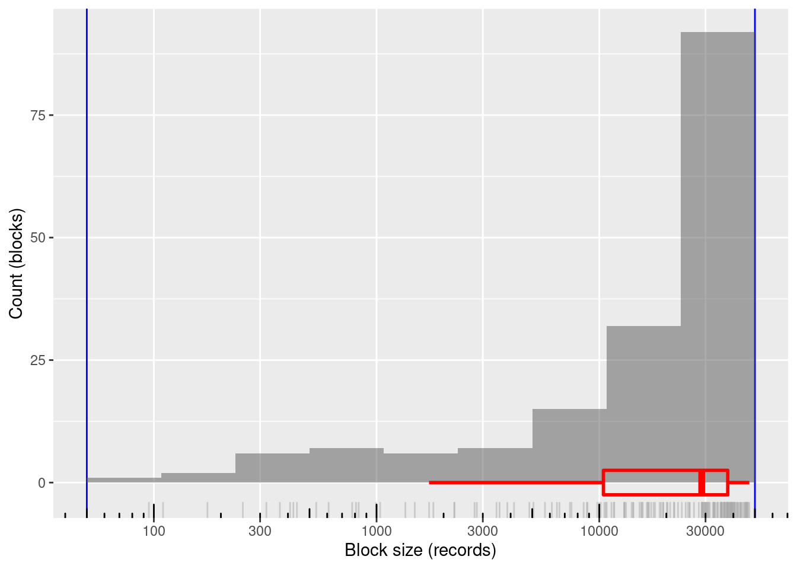
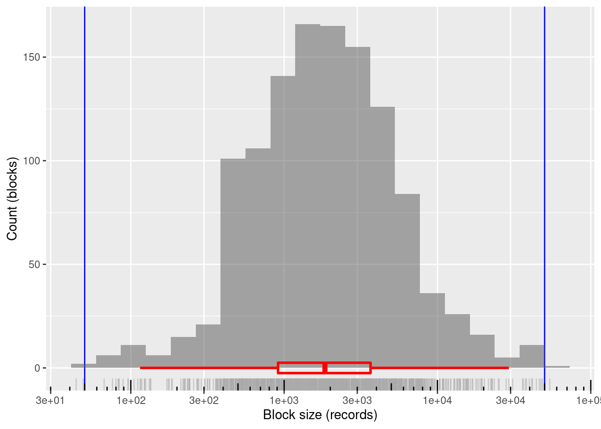
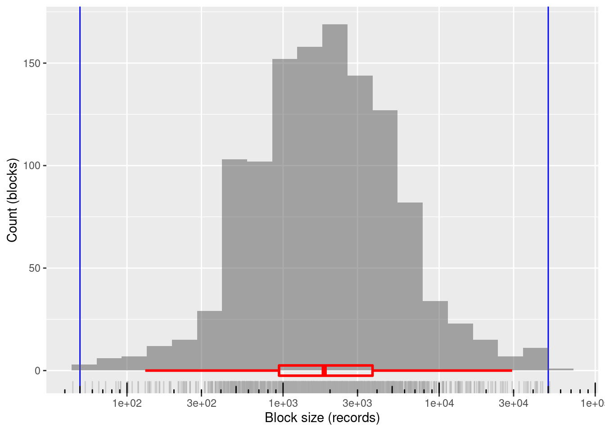

Last updated: 2021-01-27
Checks: 7 0
Knit directory:
fa_sim_cal/
This reproducible R Markdown analysis was created with workflowr (version 1.6.2). The Checks tab describes the reproducibility checks that were applied when the results were created. The Past versions tab lists the development history.
Great! Since the R Markdown file has been committed to the Git repository, you know the exact version of the code that produced these results.
Great job! The global environment was empty. Objects defined in the global environment can affect the analysis in your R Markdown file in unknown ways. For reproduciblity it’s best to always run the code in an empty environment.
The command set.seed(20201104) was run prior to running the code in the R Markdown file.
Setting a seed ensures that any results that rely on randomness, e.g.
subsampling or permutations, are reproducible.
Great job! Recording the operating system, R version, and package versions is critical for reproducibility.
Nice! There were no cached chunks for this analysis, so you can be confident that you successfully produced the results during this run.
Great job! Using relative paths to the files within your workflowr project makes it easier to run your code on other machines.
Great! You are using Git for version control. Tracking code development and connecting the code version to the results is critical for reproducibility.
The results in this page were generated with repository version 1563ef0. See the Past versions tab to see a history of the changes made to the R Markdown and HTML files.
Note that you need to be careful to ensure that all relevant files for the
analysis have been committed to Git prior to generating the results (you can
use wflow_publish or wflow_git_commit). workflowr only
checks the R Markdown file, but you know if there are other scripts or data
files that it depends on. Below is the status of the Git repository when the
results were generated:
Ignored files:
Ignored: .Rhistory
Ignored: .Rproj.user/
Ignored: .tresorit/
Ignored: data/VR_20051125.txt.xz
Ignored: output/blk_char.fst
Ignored: output/ent_blk.fst
Ignored: output/ent_cln.fst
Ignored: output/ent_raw.fst
Ignored: renv/library/
Ignored: renv/staging/
Note that any generated files, e.g. HTML, png, CSS, etc., are not included in this status report because it is ok for generated content to have uncommitted changes.
These are the previous versions of the repository in which changes were made
to the R Markdown (analysis/02-2_mk_block_vars.Rmd) and HTML (docs/02-2_mk_block_vars.html)
files. If you’ve configured a remote Git repository (see
?wflow_git_remote), click on the hyperlinks in the table below to
view the files as they were in that past version.
| File | Version | Author | Date | Message |
|---|---|---|---|---|
| Rmd | 1563ef0 | Ross Gayler | 2021-01-27 | Save characterisation of blocking variables |
| Rmd | 91333b0 | Ross Gayler | 2021-01-27 | Save blocking variables to a separate file |
| html | 0d30c5b | Ross Gayler | 2021-01-26 | Build site. |
| Rmd | e76546b | Ross Gayler | 2021-01-26 | Add 02-2 mk block vars |
| Rmd | bb4205d | Ross Gayler | 2021-01-26 | End of day |
| Rmd | 8ca2c76 | Ross Gayler | 2021-01-25 | End of day |
| Rmd | f872e6b | Ross Gayler | 2021-01-24 | End of day |
| Rmd | 6df8db7 | Ross Gayler | 2021-01-24 | End of day |
# Set up the project environment, because each Rmd file knits in a new R session
# so doesn't get the project setup from .Rprofile
# Project setup
library(here)
source(here::here("code", "setup_project.R"))── Attaching packages ─────────────────────────────────────── tidyverse 1.3.0 ──✓ ggplot2 3.3.3 ✓ purrr 0.3.4
✓ tibble 3.0.5 ✓ dplyr 1.0.3
✓ tidyr 1.1.2 ✓ stringr 1.4.0
✓ readr 1.4.0 ✓ forcats 0.5.0── Conflicts ────────────────────────────────────────── tidyverse_conflicts() ──
x dplyr::filter() masks stats::filter()
x dplyr::lag() masks stats::lag()# Extra set up for the 02*.Rmd notebooks
source(here::here("code", "setup_02.R"))
# Extra set up for this notebook
# ???
# start the execution time clock
tictoc::tic("Computation time (excl. render)")This notebook (02-2_mk_block_vars) constructs the potential blocking
variables identified in the previous notebook:
Show the assumed range of useful block sizes.
# Arbitrary lower and upper bound on useful block size
# These are set in setup_02.R
blk_sz_min[1] 50blk_sz_max[1] 50000Read the usable data. Remember that this consists of only the ACTIVE & VERIFIED records.
# Show the entity data file location
# This is set in code/file_paths.R
fs::path_file(f_entity_cln_fst)[1] "ent_cln.fst"# get entity data
d <- fst::read_fst(
f_entity_cln_fst,
columns = c("id", "sex", "age_cln", "age_cln_miss", "birth_place", "county_id")
) %>%
tibble::as_tibble()
dim(d)[1] 4099699 6Identify the missing values in the blocking variables and flag those records as exclusions for blocking and modelling.
Sex and age have missing values, county ID does not.
# updating d is probably poor form
# but I am only adding variables, so it is idempotent
d <- d %>%
dplyr::mutate(
excl_blk_age_county_miss = age_cln_miss,
excl_blk_sex_age_miss = sex == "UNK" | age_cln_miss,
excl_blk_sex_age_county_miss = sex == "UNK" | age_cln_miss
)
d %>%
dplyr::select(starts_with("excl_blk_")) %>%
summary() excl_blk_age_county_miss excl_blk_sex_age_miss excl_blk_sex_age_county_miss
Mode :logical Mode :logical Mode :logical
FALSE:4068644 FALSE:4053064 FALSE:4053064
TRUE :31055 TRUE :46635 TRUE :46635 There are only 4 blocks in (sex, age) that are too small. This can be fixed with a small amount of age pooling.
The 17 year old and oldest age groups are the smallest, so they will need pooling with other age groups.
The ordering of age is meaningful, so only pool adjacent ages (in order to maintain the meaningfulness of the ordering).
Age will be combined with sex, so it is the size of the combined (sex, age) blocks which is relevant.
The distribution of age is likely to be different for males and females. We could have different pooling of age for males and females. However, for simplicity I will use the same pooling of age for males and females.
Look at the distribution of block sizes for the relevant age groups.
d %>%
dplyr::filter(!excl_blk_sex_age_miss &
(age_cln <= 20 | age_cln >= 95)) %>%
with(table(age_cln, sex)) sex
age_cln FEMALE MALE
17 23 19
18 10516 9962
19 35091 31367
20 36470 31101
95 1347 439
96 995 368
97 777 251
98 536 174
99 409 110
100 320 95
101 332 182
102 152 43
103 130 47
104 217 151Pool the 17 year olds with the 18 year olds
Pooling 102 with 103 would be adequate.
Characterise the newly constructed (sex, age) blocking variable.
# construct the (sex, age) blocking variable
# updating d is probably poor form
# but I am only adding variables, so it is idempotent
d <- d %>%
dplyr::mutate(
blk_age = dplyr::case_when(
excl_blk_sex_age_miss ~ NA_integer_, # make value NA for safety
# code using NA is likely to fail if I forget to exclude these cases
age_cln == 17 ~ 18L, # map 17 to 18
age_cln >= 101 ~ 101L, # map all ages >= 101 to 101
TRUE ~ age_cln # all ages < 101, accept as is
),
# create the new combined blocking variable
blk_sex_age = dplyr::if_else(excl_blk_sex_age_miss,
NA_character_, # make value NA for safety
paste0("Sex=", sex, ":AgeGrp=", blk_age)
)
) %>%
dplyr::select(-blk_age) # we won't use age alone as a blocking variable
# calculate the distribution of block sizes
d_blk <- d %>%
dplyr::filter(!excl_blk_sex_age_miss) %>%
dplyr::count(blk_sex_age, name = "blk_sz")
# number of blocks
nrow(d_blk)[1] 168# summary of distribution of block sizes
summary(d_blk$blk_sz) Min. 1st Qu. Median Mean 3rd Qu. Max.
95 10443 28838 24125 37752 47190 # distribution of block sizes
d_blk %>%
ggplot(aes(x = blk_sz)) +
geom_vline(xintercept = c(blk_sz_min, blk_sz_max), colour = "blue") +
# geom_jitter(width = 0.35, alpha = 0.2) +
geom_histogram(bins = 10, boundary = log10(blk_sz_max), alpha = 0.5) +
geom_rug(colour = "dark grey", alpha = 0.5) +
geom_boxplot(outlier.shape = NA, colour = "red", alpha = 0, size = 1, width = 5) +
scale_x_log10(n.breaks = 7) + annotation_logticks(sides = "b") +
theme(panel.grid.minor.x = element_blank()) +
xlab("Block size (records)") + ylab("Count (blocks)")
| Version | Author | Date |
|---|---|---|
| 0d30c5b | Ross Gayler | 2021-01-26 |
168 blocks
100% of blocks in the useful size range and covering most of the range
Mean block size (most relevant for computational effort): ~24k records
The block sizes are concentrated at the higher end of the range (on a logarithmic size scale)
There are 1,759 (21%) blocks in (age, county) that are too small. None are too large and the largest block is significantly smaller than the upper bound on useful block size. I hope this can be fixed with some aggressive pooling.
Both age and county are able to be pooled. The ordering of age is meaningful so it makes most sense to pool adjacent age values to maintain the ordering. The county IDs are not ordered, so there is no obvious constraint on which counties should be pooled.
Prefer to pool age because the basis of pooling is clear. The fraction of records at each age is never large, so we have good control over the boundaries between pooled ages.
# get the block sizes for age and county in isolation
d_blk_age <- d %>%
dplyr::filter(!excl_blk_age_county_miss) %>%
dplyr::count(age_cln, name = "blk_sz")
d_blk_cnty <- d %>%
dplyr::filter(!excl_blk_age_county_miss) %>%
dplyr::count(county_id, name = "blk_sz")
# summaries of block sizes for age and county in isolation
summary(d_blk_age$blk_sz) Min. 1st Qu. Median Mean 3rd Qu. Max.
42 17047 53492 46235 74110 86956 summary(d_blk_cnty$blk_sz) Min. 1st Qu. Median Mean 3rd Qu. Max.
1027 12368 20889 40686 48004 410466 For county ID, the maximum block size is 410,466 records and the minimum block size is 1,027 records.
To reduce the maximum block size to 50k records we need to combine it with an age group with no more than 50,000 / 410,466 = 12% of the records.
To reduce the minimum block size to 50 records we need to combine it with an age group with no less than 50 / 1,027 = 5% of the records.
The previous points assume that age and county are independent, which is unlikely to be exactly true. So the figures calculated here should be regarded as back of the envelope approximations.
The largest pooled age group is 12% of records and the smallest is 5%. That leaves 83% of the records to be distributed over the pooled groups of intermediate size.
So, there must be between 5 and 16 intermediate pooled age groups.
Aim for the intermediate group sizes to be equally spaced on a linear probability scale between the sizes of the largest and smallest pooled groups.
The target boundaries for the age groups are calculated as follows:
n_grp <- 10 + 1 + 1 # 10 intermediate + 1 largest + 1 smallest
n_rec <- sum(d_blk_age$blk_sz) # number of records
p_max <- 0.12 # fraction of records in largest group
p_min <- 0.05 # fraction of records in smallest group
groups <- tibble::tibble(
grp = 1:n_grp
)
groups <- groups %>%
dplyr::mutate(
p_raw = # raw fraction of records in each group (do NOT sum to 1)
seq(from = p_max, to = p_min, length.out = n_grp), # intermediate probs equally spaced on linear scale
p_grp = # fraction of records in each group (normalised to sum to 1)
dplyr::if_else(grp %in% c(1, n_grp),
p_raw,
(1.0 - (p_max + p_min)) * p_raw / (sum(p_raw) - (p_max + p_min))
),
p_cum = # cumulative fraction of records at the top boundary of each group
cumsum(p_grp),
rec_cut = # nearest record to group boundary
round(p_cum * n_rec)
)
# look at the results of the group size calculation
groups %>%
knitr::kable(format.args = list(big.mark = ","))| grp | p_raw | p_grp | p_cum | rec_cut |
|---|---|---|---|---|
| 1 | 0.1200000 | 0.1200000 | 0.1200000 | 488,237 |
| 2 | 0.1136364 | 0.1109626 | 0.2309626 | 939,704 |
| 3 | 0.1072727 | 0.1047487 | 0.3357112 | 1,365,889 |
| 4 | 0.1009091 | 0.0985348 | 0.4342460 | 1,766,792 |
| 5 | 0.0945455 | 0.0923209 | 0.5265668 | 2,142,413 |
| 6 | 0.0881818 | 0.0861070 | 0.6126738 | 2,492,752 |
| 7 | 0.0818182 | 0.0798930 | 0.6925668 | 2,817,808 |
| 8 | 0.0754545 | 0.0736791 | 0.7662460 | 3,117,582 |
| 9 | 0.0690909 | 0.0674652 | 0.8337112 | 3,392,074 |
| 10 | 0.0627273 | 0.0612513 | 0.8949626 | 3,641,284 |
| 11 | 0.0563636 | 0.0550374 | 0.9500000 | 3,865,212 |
| 12 | 0.0500000 | 0.0500000 | 1.0000000 | 4,068,644 |
Now construct functions to map from age to pooled age group.
# map from cumulative record number to group number
cumrec_to_grp <- stepfun(
x = c(1L, groups$rec_cut), # x value is the upper/right boundary of each group
y = c(1L, 1L, groups$grp),
right = FALSE,
f = 1 # use the x value to the right when interpolating
)
cumrec_to_grpStep function
Call: stepfun(x = c(1L, groups$rec_cut), y = c(1L, 1L, groups$grp),
right = FALSE, f = 1)
x[1:13] = 1, 4.8824e+05, 9.397e+05, ..., 3.8652e+06, 4.0686e+06
14 plateau levels = 1, 1, 1, ..., 11, 12# add group number to the blocked age
d_blk_age <- d_blk_age %>%
dplyr::mutate(
cum_rec = cumsum(blk_sz),
grp = cumrec_to_grp(cum_rec)
)
# map from age to group number
age_to_grp <- stepfun(
x = c(16L, d_blk_age$age_cln), # x value is the upper/right boundary of each group
y = c(1L, 1L, d_blk_age$grp),
right = FALSE,
f = 1 # use the x value to the right when interpolating
)
age_to_grpStep function
Call: stepfun(x = c(16L, d_blk_age$age_cln), y = c(1L, 1L, d_blk_age$grp),
right = FALSE, f = 1)
x[1:89] = 16, 17, 18, ..., 103, 104
90 plateau levels = 1, 1, 1, ..., 12, 12# add mapped group number to the blocked age to check
d_blk_age <- d_blk_age %>%
dplyr::mutate(
grp_from_age = age_to_grp(age_cln)
)Construct the (age, county) blocking variable.
# construct the (age, county) blocking variable
# updating d is probably poor form
# but I am only adding variables, so it is idempotent
d <- d %>%
dplyr::mutate(
# create the new combined blocking variable
blk_age_county = dplyr::if_else(excl_blk_age_county_miss,
NA_character_, # make value NA for safety
paste0("AgeGrp=", age_to_grp(age_cln), ":County=", county_id)
)
)Characterise the newly constructed (age, county) blocking variable.
# calculate the distribution of block sizes
d_blk <- d %>%
dplyr::filter(!excl_blk_age_county_miss) %>%
dplyr::count(blk_age_county, name = "blk_sz")
# number of blocks
nrow(d_blk)[1] 1200# summary of distribution of block sizes
summary(d_blk$blk_sz) Min. 1st Qu. Median Mean 3rd Qu. Max.
44.0 912.5 1845.5 3390.5 3660.2 54013.0 # distribution of block sizes
d_blk %>%
ggplot(aes(x = blk_sz)) +
geom_vline(xintercept = c(blk_sz_min, blk_sz_max), colour = "blue") +
# geom_jitter(width = 0.35, alpha = 0.2) +
geom_histogram(bins = 20, boundary = log10(blk_sz_max), alpha = 0.5) +
geom_rug(colour = "dark grey", alpha = 0.5) +
geom_boxplot(outlier.shape = NA, colour = "red", alpha = 0, size = 1, width = 5) +
scale_x_log10(n.breaks = 7) + annotation_logticks(sides = "b") +
theme(panel.grid.minor.x = element_blank()) +
xlab("Block size (records)") + ylab("Count (blocks)")
| Version | Author | Date |
|---|---|---|
| 0d30c5b | Ross Gayler | 2021-01-26 |
1200 blocks
~99.8%% of blocks in the useful size range and covering the entire useful range
Mean block size (most relevant for computational effort): ~3.4k records
The block sizes are concentrated in the middle of the useful range (on a logarithmic size scale)
There are 5,127 (31%) blocks in (sex, age, county) that are too small. None are too large and the largest block is significantly smaller than the upper bound on useful block size. I hope this can be fixed with some aggressive pooling.
Both age and county are able to be pooled. The ordering of age is meaningful so it makes most sense to pool adjacent age values to maintain the ordering. The county IDs are not ordered, so there is no obvious constraint on which counties should be pooled.
Prefer to pool age because the basis of pooling is clear. The fraction of records at each age is never large, so we have good control over the boundaries between pooled ages.
# get the unpooled block sizes for (sex, age, county), (sex, age), age, and county
d_blk_sex_age_county <- d %>%
dplyr::filter(!excl_blk_sex_age_county_miss) %>%
dplyr::count(sex, age_cln, county_id, name = "blk_sz")
summary(d_blk_sex_age_county$blk_sz) Min. 1st Qu. Median Mean 3rd Qu. Max.
1.0 38.0 109.0 242.6 259.0 5739.0 d_blk_sex_county <- d %>%
dplyr::filter(!excl_blk_sex_age_county_miss) %>%
dplyr::count(sex, county_id, name = "blk_sz")
summary(d_blk_sex_county$blk_sz) Min. 1st Qu. Median Mean 3rd Qu. Max.
435 5831 10799 20265 24066 226197 For (sex, county), the maximum block size is 226,197 records and the minimum block size is 435 records.
To reduce the maximum block size to 50k records we need to combine it with an age group with no more than 50,000 / 226,197 = 22% of the records.
To reduce the minimum block size to 50 records we need to combine it with an age group with no less than 50 / 435 = 12% of the records.
The previous points assume that sex, age, and county are independent, which is unlikely to be exactly true. So the figures calculated here should be regarded as back of the envelope approximations.
The largest pooled age group is 22% of records and the smallest is 12%. That leaves 66% of the records to be distributed over the pooled groups of intermediate size.
So, there must be between 3 and 5 intermediate pooled age groups.
Aim for the intermediate group sizes to be equally spaced on a linear probability scale between the sizes of the largest and smallest pooled groups.
The target boundaries for the age groups are calculated as follows:
n_grp <- 4 + 1 + 1 # 10 intermediate + 1 largest + 1 smallest
n_rec <- sum(d_blk_age$blk_sz) # number of records
p_max <- 0.22 # fraction of records in largest group
p_min <- 0.12 # fraction of records in smallest group
groups <- tibble::tibble(
grp = 1:n_grp
)
groups <- groups %>%
dplyr::mutate(
p_raw = # raw fraction of records in each group (do NOT sum to 1)
seq(from = p_max, to = p_min, length.out = n_grp), # intermediate probs equally spaced on linear scale
p_grp = # fraction of records in each group (normalised to sum to 1)
dplyr::if_else(grp %in% c(1, n_grp),
p_raw,
(1.0 - (p_max + p_min)) * p_raw / (sum(p_raw) - (p_max + p_min))
),
p_cum = # cumulative fraction of records at the top boundary of each group
cumsum(p_grp),
rec_cut = # nearest record to group boundary
round(p_cum * n_rec)
)
# look at the results of the group size calculation
groups %>%
knitr::kable(format.args = list(big.mark = ","))| grp | p_raw | p_grp | p_cum | rec_cut |
|---|---|---|---|---|
| 1 | 0.22 | 0.2200000 | 0.2200000 | 895,102 |
| 2 | 0.20 | 0.1941176 | 0.4141176 | 1,684,897 |
| 3 | 0.18 | 0.1747059 | 0.5888235 | 2,395,713 |
| 4 | 0.16 | 0.1552941 | 0.7441176 | 3,027,550 |
| 5 | 0.14 | 0.1358824 | 0.8800000 | 3,580,407 |
| 6 | 0.12 | 0.1200000 | 1.0000000 | 4,068,644 |
Now construct functions to map from age to pooled age group.
# map from cumulative record number to group number
cumrec_to_grp <- stepfun(
x = c(1L, groups$rec_cut), # x value is the upper/right boundary of each group
y = c(1L, 1L, groups$grp),
right = FALSE,
f = 1 # use the x value to the right when interpolating
)
cumrec_to_grpStep function
Call: stepfun(x = c(1L, groups$rec_cut), y = c(1L, 1L, groups$grp),
right = FALSE, f = 1)
x[1:7] = 1, 8.951e+05, 1.6849e+06, ..., 3.5804e+06, 4.0686e+06
8 plateau levels = 1, 1, 1, ..., 5, 6# add group number to the blocked age
d_blk_age <- d_blk_age %>%
dplyr::mutate(
cum_rec = cumsum(blk_sz),
grp = cumrec_to_grp(cum_rec)
)
# map from age to group number
age_to_grp <- stepfun(
x = c(16L, d_blk_age$age_cln), # x value is the upper/right boundary of each group
y = c(1L, 1L, d_blk_age$grp),
right = FALSE,
f = 1 # use the x value to the right when interpolating
)
age_to_grpStep function
Call: stepfun(x = c(16L, d_blk_age$age_cln), y = c(1L, 1L, d_blk_age$grp),
right = FALSE, f = 1)
x[1:89] = 16, 17, 18, ..., 103, 104
90 plateau levels = 1, 1, 1, ..., 6, 6# add mapped group number to the blocked age to check
d_blk_age <- d_blk_age %>%
dplyr::mutate(
grp_from_age = age_to_grp(age_cln)
)Construct the (age, county) blocking variable.
# construct the (age, county) blocking variable
# updating d is probably poor form
# but I am only adding variables, so it is idempotent
d <- d %>%
dplyr::mutate(
# create the new combined blocking variable
blk_sex_age_county = dplyr::if_else(excl_blk_sex_age_county_miss,
NA_character_, # make value NA for safety
paste0("Sex=", sex, ":AgeGrp=", age_to_grp(age_cln), ":County=", county_id)
)
)Characterise the newly constructed (age, county) blocking variable.
# calculate the distribution of block sizes
d_blk <- d %>%
dplyr::filter(!excl_blk_sex_age_county_miss) %>%
dplyr::count(blk_sex_age_county, name = "blk_sz")
# number of blocks
nrow(d_blk)[1] 1200# summary of distribution of block sizes
summary(d_blk$blk_sz) Min. 1st Qu. Median Mean 3rd Qu. Max.
45.0 942.8 1835.0 3377.6 3744.0 51009.0 # distribution of block sizes
d_blk %>%
ggplot(aes(x = blk_sz)) +
geom_vline(xintercept = c(blk_sz_min, blk_sz_max), colour = "blue") +
# geom_jitter(width = 0.35, alpha = 0.2) +
geom_histogram(bins = 20, boundary = log10(blk_sz_max), alpha = 0.5) +
geom_rug(colour = "dark grey", alpha = 0.5) +
geom_boxplot(outlier.shape = NA, colour = "red", alpha = 0, size = 1, width = 5) +
scale_x_log10(n.breaks = 7) + annotation_logticks(sides = "b") +
theme(panel.grid.minor.x = element_blank()) +
xlab("Block size (records)") + ylab("Count (blocks)")
| Version | Author | Date |
|---|---|---|
| 0d30c5b | Ross Gayler | 2021-01-26 |
1200 blocks
~99.8%% of blocks in the useful size range and covering the entire useful range
Mean block size (most relevant for computational effort): ~3.4k records
The block sizes are concentrated in the middle of the useful range (on a logarithmic size scale)
Save the blocking variables as a separate file that can be joined to the clean entity data.
# Show the clean data file location
# This is set in code/file_paths.R
fs::path_file(f_entity_blk_fst)[1] "ent_blk.fst"# save the entity blocking variables (cheap-skate caching)
d %>%
dplyr::select(id, starts_with(c("excl_blk_", "blk_"))) %>%
fst::write_fst(f_entity_blk_fst, compress = 100) %>%
dplyr::glimpse()Rows: 4,099,699
Columns: 7
$ id <int> 1, 2, 3, 4, 5, 6, 7, 8, 9, 10, 11, 12, 1…
$ excl_blk_age_county_miss <lgl> FALSE, FALSE, FALSE, FALSE, FALSE, FALSE…
$ excl_blk_sex_age_miss <lgl> FALSE, FALSE, FALSE, FALSE, FALSE, FALSE…
$ excl_blk_sex_age_county_miss <lgl> FALSE, FALSE, FALSE, FALSE, FALSE, FALSE…
$ blk_sex_age <chr> "Sex=MALE:AgeGrp=43", "Sex=MALE:AgeGrp=5…
$ blk_age_county <chr> "AgeGrp=5:County=5", "AgeGrp=7:County=8"…
$ blk_sex_age_county <chr> "Sex=MALE:AgeGrp=3:County=5", "Sex=MALE:…Characterise the blocks. This may be useful later for selecting the blocks to use.
# function to characterise the contents of 1 block
char_1_block <- function(
.x, # data frame containing all the records of one block
.y # one-row data frame - the grouping key (must be one-column only)
# value: a data frame of one row giving all the summary statistics for the block
) {
tibble::tibble(
blk_id = .y[[1]],
blk_sz = nrow(.x),
sex_p_female = sum(.x$sex == "FEMALE") / blk_sz,
sex_n = .x$sex %>% unique() %>% length(),
sex_n_eff = .x$sex %>% n_eff(),
age_mean = mean(.x$age_cln),
age_min = min(.x$age_cln),
age_max = max(.x$age_cln),
age_range = age_max - age_min + 1,
county_n = .x$county_id %>% unique() %>% length(),
county_n_eff = .x$county_id %>% n_eff()
)
}
# Function to calculate the effective number of levels of a categorical variable
# Based on Shannon entropy
# This is the number of levels a uniformly distributed variable would need to have the same entropy
n_eff <- function (
x # vector of discrete levels
) {
p <- table(x) %>% prop.table() %>% as.vector() # probabilities of levels
-sum( p * log(p)) %>% exp()
}
# characterise each of the blocks created by each of the blocking variables
# and put all the results in a single data frame
d_blks <- dplyr::bind_rows(
list(
blk_sex_age = d %>%
dplyr::filter(!excl_blk_sex_age_miss) %>%
dplyr::group_by(blk_sex_age) %>%
group_modify(char_1_block) %>%
dplyr::ungroup() %>%
dplyr::select(-blk_sex_age),
blk_age_county = d %>%
dplyr::filter(!excl_blk_age_county_miss) %>%
dplyr::group_by(blk_age_county) %>%
group_modify(char_1_block) %>%
dplyr::ungroup() %>%
dplyr::select(-blk_age_county),
blk_sex_age_county = d %>%
dplyr::filter(!excl_blk_sex_age_county_miss) %>%
dplyr::group_by(blk_sex_age_county) %>%
group_modify(char_1_block) %>%
dplyr::ungroup() %>%
dplyr::select(-blk_sex_age_county)
),
.id = "blk_var"
)Save the characterisation of each block created by each blocking variable.
# Show the clean data file location
# This is set in code/file_paths.R
fs::path_file(f_blk_char.fst)[1] "blk_char.fst"# save the entity blocking variables (cheap-skate caching)
d_blks %>%
fst::write_fst(f_blk_char.fst, compress = 100) %>%
dplyr::glimpse()Rows: 2,568
Columns: 12
$ blk_var <chr> "blk_sex_age", "blk_sex_age", "blk_sex_age", "blk_sex_ag…
$ blk_id <chr> "Sex=FEMALE:AgeGrp=100", "Sex=FEMALE:AgeGrp=101", "Sex=F…
$ blk_sz <int> 320, 831, 10539, 35091, 36470, 36216, 35495, 36632, 3643…
$ sex_p_female <dbl> 1, 1, 1, 1, 1, 1, 1, 1, 1, 1, 1, 1, 1, 1, 1, 1, 1, 1, 1,…
$ sex_n <int> 1, 1, 1, 1, 1, 1, 1, 1, 1, 1, 1, 1, 1, 1, 1, 1, 1, 1, 1,…
$ sex_n_eff <dbl> 1, 1, 1, 1, 1, 1, 1, 1, 1, 1, 1, 1, 1, 1, 1, 1, 1, 1, 1,…
$ age_mean <dbl> 100.00000, 102.27918, 17.99782, 19.00000, 20.00000, 21.0…
$ age_min <int> 100, 101, 17, 19, 20, 21, 22, 23, 24, 25, 26, 27, 28, 29…
$ age_max <int> 100, 104, 18, 19, 20, 21, 22, 23, 24, 25, 26, 27, 28, 29…
$ age_range <dbl> 1, 4, 2, 1, 1, 1, 1, 1, 1, 1, 1, 1, 1, 1, 1, 1, 1, 1, 1,…
$ county_n <int> 82, 90, 97, 99, 100, 100, 100, 100, 100, 100, 100, 100, …
$ county_n_eff <dbl> 53.31918, 35.16054, 59.06182, 50.52109, 51.31101, 52.430…Computation time (excl. render): 30.364 sec elapsed
sessionInfo()R version 4.0.3 (2020-10-10)
Platform: x86_64-pc-linux-gnu (64-bit)
Running under: Ubuntu 20.10
Matrix products: default
BLAS: /usr/lib/x86_64-linux-gnu/blas/libblas.so.3.9.0
LAPACK: /usr/lib/x86_64-linux-gnu/lapack/liblapack.so.3.9.0
locale:
[1] LC_CTYPE=en_AU.UTF-8 LC_NUMERIC=C
[3] LC_TIME=en_AU.UTF-8 LC_COLLATE=en_AU.UTF-8
[5] LC_MONETARY=en_AU.UTF-8 LC_MESSAGES=en_AU.UTF-8
[7] LC_PAPER=en_AU.UTF-8 LC_NAME=C
[9] LC_ADDRESS=C LC_TELEPHONE=C
[11] LC_MEASUREMENT=en_AU.UTF-8 LC_IDENTIFICATION=C
attached base packages:
[1] stats graphics grDevices datasets utils methods base
other attached packages:
[1] knitr_1.30 fst_0.9.4 fs_1.5.0 forcats_0.5.0
[5] stringr_1.4.0 dplyr_1.0.3 purrr_0.3.4 readr_1.4.0
[9] tidyr_1.1.2 tibble_3.0.5 ggplot2_3.3.3 tidyverse_1.3.0
[13] tictoc_1.0 here_1.0.1 workflowr_1.6.2
loaded via a namespace (and not attached):
[1] Rcpp_1.0.6 lubridate_1.7.9.2 utf8_1.1.4 assertthat_0.2.1
[5] rprojroot_2.0.2 digest_0.6.27 R6_2.5.0 cellranger_1.1.0
[9] backports_1.2.1 reprex_0.3.0 evaluate_0.14 highr_0.8
[13] httr_1.4.2 pillar_1.4.7 rlang_0.4.10 readxl_1.3.1
[17] rstudioapi_0.13 data.table_1.13.6 whisker_0.4 rmarkdown_2.6
[21] labeling_0.4.2 munsell_0.5.0 broom_0.7.3 compiler_4.0.3
[25] httpuv_1.5.5 modelr_0.1.8 xfun_0.20 pkgconfig_2.0.3
[29] htmltools_0.5.1.1 tidyselect_1.1.0 bookdown_0.21 fansi_0.4.2
[33] crayon_1.3.4 dbplyr_2.0.0 withr_2.4.0 later_1.1.0.1
[37] grid_4.0.3 jsonlite_1.7.2 gtable_0.3.0 lifecycle_0.2.0
[41] DBI_1.1.1 git2r_0.28.0 magrittr_2.0.1 scales_1.1.1
[45] cli_2.2.0 stringi_1.5.3 farver_2.0.3 renv_0.12.5
[49] promises_1.1.1 xml2_1.3.2 ellipsis_0.3.1 generics_0.1.0
[53] vctrs_0.3.6 tools_4.0.3 glue_1.4.2 hms_1.0.0
[57] parallel_4.0.3 yaml_2.2.1 colorspace_2.0-0 rvest_0.3.6
[61] haven_2.3.1